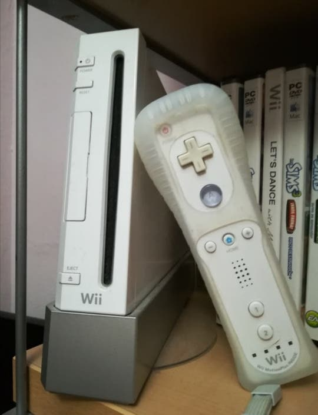

Las bicicletas son unas de las cosas que mas me gustan, desde que tengo
memoria siempre es el medio de transporte que mas he usado;
quiza es por mis padres
que tambien usaban este medio que me enseñaron a movilizarme en ellas.
(Mi bicicleta actual)
A continuacion les dejare unos links para que visiten sitios web con contenido y piezas
para sus bicicletas.
Los videojuegos tambien hacen parte de las cosas que me gustan pues desde muy pequeño mi familia me han enseñado ese pasatiempo entonces desde siempre he sido jugador

(Mis consolas actuales)
A continuacion les dejare unos links para que visiten sitios web con contenido y juegos
para sus consolas.
Hacer deporte tambien es una de las cosas que me gustan, me gusta sentirme bien, fuerte, sano.
(Mis articulos de deporte)
A continuacion les dejare unos links para que visiten sitios web con contenido y articulos
para estar sanos y fuertes.